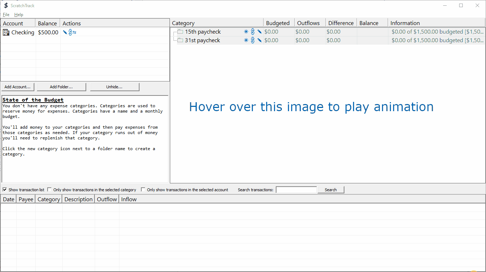
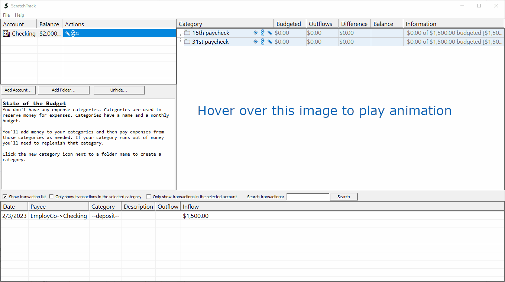
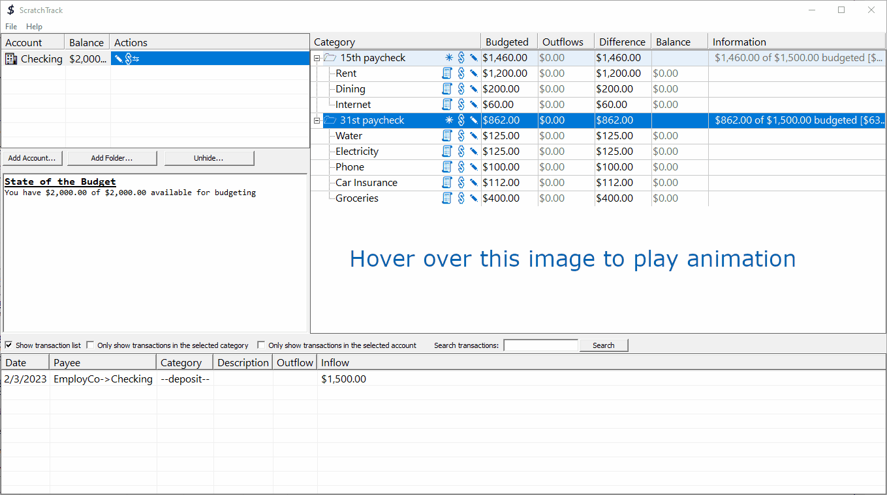
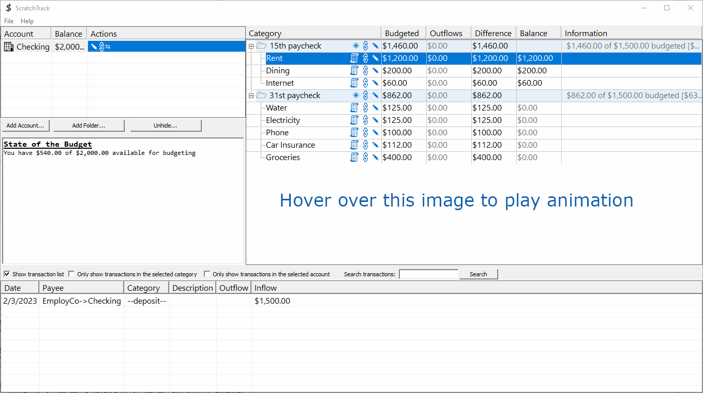
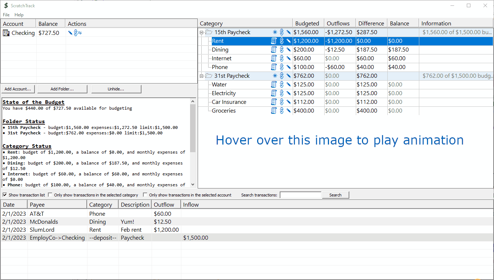
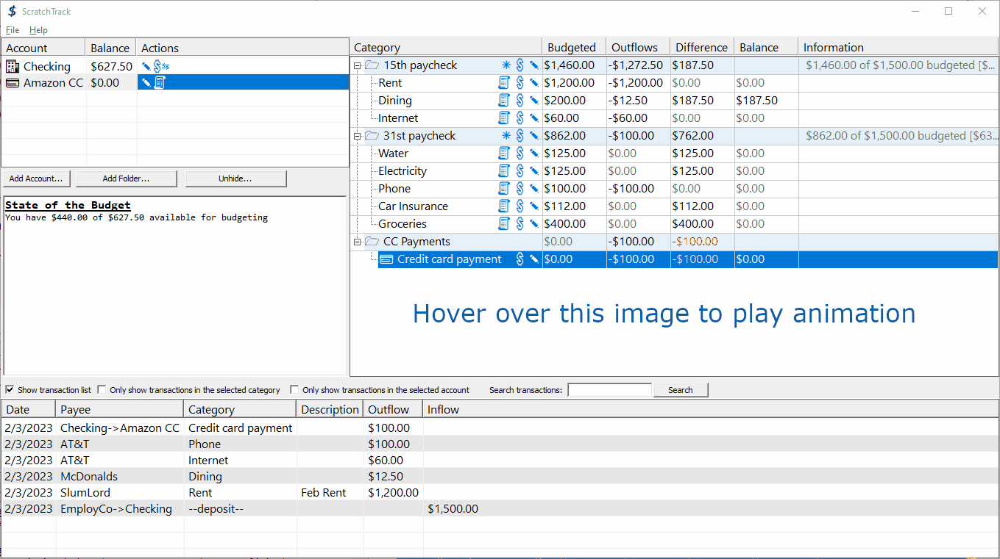

|
| Home |
| FAQ |
| Quick Start Guide |
| Donate |
| File a bug |
ScratchTrack 0.5
Quick Start
Glossary - If you read anything, read this. Seriously. You'll be done in like five minutes.| Term |
Definition |
| Envelope (or bucket) budgeting |
In envelope budgeting, expenses are grouped into categories (envelopes) and funds
are assigned to those categories. Expenses are tracked against categories.
When the money assigned to a category is spent, spending in that category stops until
more funds are added. Key concept: You don't spend money you don't have. |
| Categories |
Categories
provide an organized view of the funds in accounts. You'll create
categories for different types of expenses (rent, groceries, dining
out, utilities, etcetera) and assign money to them. Understanding
categories is important so let's do a quick walkthrough:
|
| Accounts |
In
ScratchTrack, unspent funds are always in an account. Funds can be
assigned to categories, but categories are just a view of
the money in the accounts. Key concept: Money stays in accounts until spent. |
| In-budget account |
An
in-budget account is an account whose balance can be assigned to
categories. Accounts that you typically spend from (i.e. checking
accounts) are usually in-budget. You can pay for things from off-budget
accounts, but off-budget balances aren't used to fund the monthly
budget. |
| Budgetable Dollars |
Budgetable
(or assignable) dollars is the sum of in-budget account balances
minus funds already assigned to categories. When money is assigned
to
a category, the money stays in the account and the account's balance
doesn't change, but budgetable dollars decreases by that amount. |
| Folder |
Folders
are used to organize categories. I have three
folders in my personal budget. The first two folders align
with paycheck dates and are titled "15th" and "31st". Those folders
contain categories that I contribute to each month. I refill them when
the associated paycheck arrives.The third folder is titled "out of
band" and contains categories that I don't fill on a regular basis. Folders can optionally have spending limits. If you budget or spend over the limit ScratchTrack warns you. |
ScratchTrack User Interface
ScratchTrack's single window interface has four main areas
- The accounts list displays accounts and balances
- The budget info window displays budget status
- The folders and categories tree displays folders and categories
- The transaction list displays transactions

Workflow walk-throughs
Walk-through one: Fred sets up
ScratchTrack
 |
Walk-through two: Fred gets paid
 |
Walk-through three: Fred creates categories
 |
Walk-through four: Fred assigns funds to categories
 |
Walk-through five: Fred Spends
 |
Congratulations! At this point, you know the general worklfow, but there's one more topic to cover: Credit Cards.
| Walk-through six: Fred gets a credit
card Fred has learned that he can get 5% back on his Amazon purchases if he pays with an Amazon credit card. This sounds good to Fred (and I agree!) so he gets one.
 |